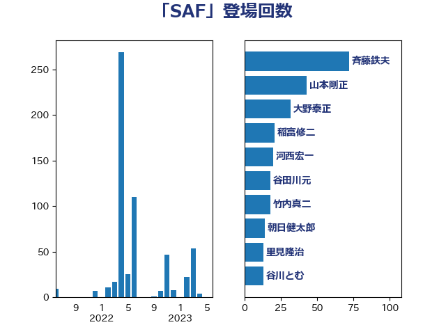

単語「SAF」

| 斉藤鉄夫 | 公明党 | 72 回 |
| 山本剛正 | 日本維新の会 | 43 回 |
| 大野泰正 | 自由民主党 | 32 回 |
| 稲富修二 | 立憲民主党 | 21 回 |
| 河西宏一 | 公明党 | 20 回 |
| 谷田川元 | 立憲民主党 | 18 回 |
| 竹内真二 | 公明党 | 18 回 |
| 朝日健太郎 | 自由民主党 | 14 回 |
| 里見隆治 | 公明党 | 13 回 |
| 谷川とむ | 自由民主党 | 13 回 |
| 山岡達丸 | 立憲民主党 | 13 回 |
| 細田健一 | 自由民主党 | 12 回 |
| 古川元久 | 国民民主党 | 12 回 |
| 木村英子 | れいわ新選組 | 9 回 |
| 須藤元気 | 無所属 | 8 回 |
| 西村康稔 | 自由民主党 | 8 回 |
| 萩生田光一 | 自由民主党 | 7 回 |
| 高橋千鶴子 | 日本共産党 | 5 回 |
| 長浜博行 | 無所属 | 5 回 |
| 西村明宏 | 自由民主党 | 5 回 |
| 石井拓 | 自由民主党 | 5 回 |
| 穂坂泰 | 自由民主党 | 4 回 |
| 渡辺猛之 | 自由民主党 | 4 回 |
| 岩田和親 | 自由民主党 | 4 回 |
| たがや亮 | れいわ新選組 | 4 回 |
| 長谷川岳 | 自由民主党 | 3 回 |
| 石原宏高 | 自由民主党 | 3 回 |
| 武部新 | 自由民主党 | 3 回 |
| 森屋隆 | 立憲民主党 | 3 回 |
| 枝野幸男 | 立憲民主党 | 3 回 |
| 市村浩一郎 | 日本維新の会 | 3 回 |
| 赤羽一嘉 | 公明党 | 2 回 |
| 石川昭政 | 自由民主党 | 2 回 |
| 梅村みずほ | 日本維新の会 | 2 回 |
| 山本佐知子 | 自由民主党 | 2 回 |
| 中川康洋 | 公明党 | 2 回 |
| 青木愛 | 立憲民主党 | 1 回 |
| 笹川博義 | 自由民主党 | 1 回 |
| 武井俊輔 | 自由民主党 | 1 回 |
| 山本左近 | 自由民主党 | 1 回 |
| 太田房江 | 自由民主党 | 1 回 |
| 務台俊介 | 自由民主党 | 1 回 |